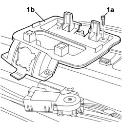
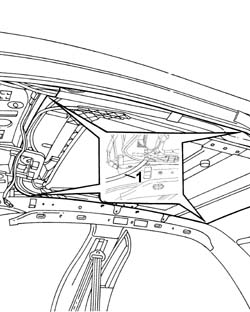
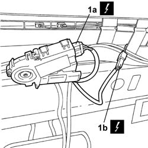
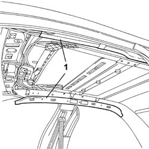
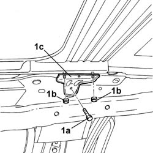
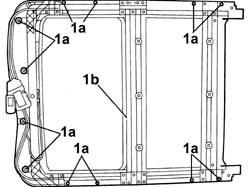

7030B10 SUN ROOF (assembly) - R.R. with roof lining removed
- Path
- Procedures > 70 FITTINGS > 7030 SUN ROOF AND HOOD > 7030B SLIDING ROOF > 7030B10 SUN ROOF (assembly) - R.R. with roof lining removed
- Kind
- repair procedure (removal / refitting; the operation number is the code)
- Applies to
- all engines; all production periods
- Interactive page
- https://sloeber94.github.io/elrnDB-lThss/en/#/80273
Applies to: all engines; all production periods
 Removing
Removing
 Refitting
RefittingSee in Op. 7030B18 Sun roof GLASS PANEL - R.R.
1. Undo the fixing bolts (1a) and remove the modular front courtesy light mounting (1b).

Applies to: all engines; all production periods
1. Disconnect the water drainage pipes.

Applies to: all engines; all production periods
1. Disconnect the electrical connectors (1a) and (1b).
 | Description | Connector |
|---|---|---|
1b | Solar cells for sun roof (CTA) | A050 |

Applies to: all engines; all production periods
1. Release the window bags and place them at the side.

Applies to: all engines; all production periods
1. Undo the bolt (1a) and the nuts (1b) and remove the sunroof retaining brackets (1c).

Applies to: all engines; all production periods
1. Undo the fixing nuts (1a) and remove the sunroof (1b).

Applies to: all engines; all production periods
Refitting
Removing- Position the sunroof and secure it using the nuts.
- Fit the sunroof retaining brackets and secure them to the bodyshell using the bolt and to the sunroof frame using the nuts.
- Reposition the window bags.
- Connect the electrical connectors and the water drainage pipes.
| Description | Connector |
|---|---|---|
. | Solar cells for sun roof (CTA) | A050 |
- Connect the battery and temporarily the selector and carry out the sun roof programming procedure.
- Fit the modular front courtesy light mounting and secure it using the bolts.
See in Op. 7030B18 Sun roof GLASS PANEL - R.R.
- Connect the negative battery terminal.